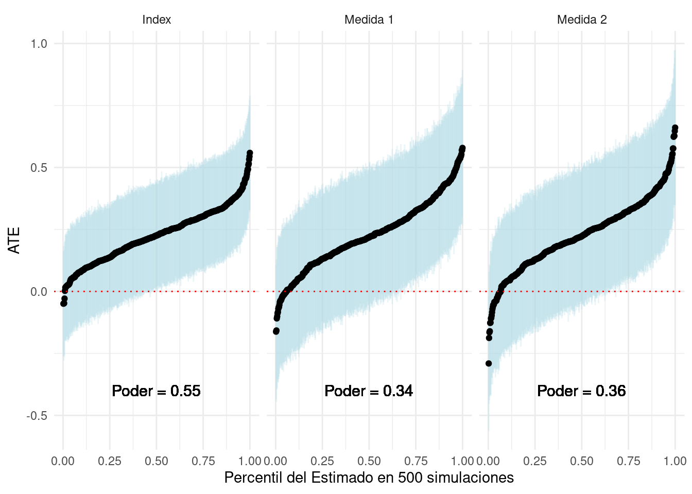

10 cosas que debe saber sobre la medición en experimentos
1 La validez de las conclusiones que sacamos de un experimento depende de la validez de las mediciones usadas.
Usualmente usamos experimentos para estimar el efecto causal de un tratamiento, \(Z\), sobre una variable de resultado, \(Y\). Sin embargo, la razón por la que nos preocupamos por estimar este efecto causal es, en principio, para entender las características de la relación entre dos conceptos teóricos sin observar, medidos por las variables observadas \(Z\) y \(Y\).
Teniendo en cuenta a Adcock y Collier (2001), considere en tres pasos el proceso de medición presentado en la Figura 1. Primero, los investigadores comienzan con un concepto sistematizado; un constructo teórico claramente definido. A partir de este concepto, el investigador desarrolla un indicador que mapea el concepto en una escala o conjunto de categorías. Finalmente, las unidades o casos se puntúan en el indicador, así proyectando una medida de tratamiento \(Z\) y un resultado \(Y\). Una medición es válida si la variación en el indicador se aproxima considerablemente a la variación en el subyacente concepto de interés.
Un diseño de investigación experimental debería permitir al investigador estimar el efecto causal de \(Z\) sobre \(Y\) bajo supuestos estándar. Pero si el objetivo final es hacer una inferencia sobre el efecto causal del concepto que \(Z\) mide sobre el concepto que \(Y\) mide, las inferencias que podemos esperar hacer sobre la base de nuestra evidencia experimental son válidas, si y solo si, ambas medidas son válidas.
2 Las mediciones son el enlace entre el argumento substantivo y/o teórico de un investigador y un diseño de investigación (experimental)
Cuando consideramos el diseño de un experimento, tendemos a enfocarnos en el proceso mediante el cual el tratamiento asignado aleatoriamente \(Z\) es asignado, y en la distribución conjunta de \(Z\) y una variable de resultado, \(Y\). En otras palabras, tendemos a separar las puntuaciones de \(Z\) y \(Y\) de conceptos más amplios cuando consideramos las propiedades estadísticas de un diseño de investigación. De esta forma, dos experimentos completamente distintos, con la misma distribución de \(Z\) y \(Y\), podrían tener propiedades idénticas.
Por ejemplo: Un ensayo clínico sobre la eficacia de la aspirina en dolores de cabeza y un experimento que proporciona información sobre el nivel de corrupción de un político de turno, que luego pregunta a la persona encuestada si votaría por este político, podría tener muestras de tamaño y distribución idénticas, asignaciones, estimandos y realización de variables de resultado (datos). Sin embargo, esta caracterización como “equivalentes” de dos proyectos de investigación completamente distintos que buscan hacer inferencias completamente distintas, puede parecernos bastante extraña, incluso inquietante.
Sin embargo, cuando consideramos la medición como un componente fundamental del diseño de investigación, claramente estos experimentos son distintos. Observamos medidas de diferentes conceptos en los datos de ambos experimentos. Al considerar los indicadores y los conceptos más amplios que subyacen a los tratamientos y resultados, nos vemos obligados a examinar las respectivas teorías o argumentos de los investigadores. Al hacerlo, podemos plantear preguntas sobre la validez de las mediciones y la relación entre la validez de ellas y la validez de inferencias finales y sustantivas.
3 Medir tratamientos incluye la operacionalización del tratamiento, además del cumplimiento de la asignación del tratamiento.
En un experimento, los tratamientos son normalmente diseñados, o como mínimo descritos, por el investigador. Los consumidores de investigación experimental deben estar interesados en las características del tratamiento y cómo este manipula un concepto de interés. La mayoría de los tratamientos en las ciencias sociales son compuestos o incluyen un conjunto de atributos. Podríamos estar interesados en el efecto de proporcionar a los votantes información sobre el desempeño de los funcionarios electos. Sin embargo, proporcionar información también incluye el modo de entrega y quién estaba entregando la información. Para comprender hasta qué punto el tratamiento manipula un concepto, debemos también entender qué manipulación adicional podría estar ejerciendo el tratamiento.
Sin embargo, a pesar de todo el esfuerzo de operacionalización de un tratamiento, el vínculo en la investigación experimental entre la operacionalización y el indicador de tratamiento es fundamentalmente distinto de la medición de covariables o variables de resultado por dos razones: En primer lugar, al asignar un tratamiento, los experimentadores buscan controlar los valores que adquiere una unidad determinada. En segundo lugar, para el indicador de tratamiento, la puntuación proviene de la asignación al tratamiento, que es un producto de la aleatorización. Un sujeto puede haber recibido el tratamiento o no, pero su puntuación en el indicador de tratamiento es simplemente el tratamiento al que se le asignó, no el tratamiento que recibió.
Cuando los sujetos reciben tratamientos distintos de aquellos a los que están asignados, normalmente buscamos en qué medir el cumplimiento; si los tratamientos se administraron y en qué medida. Para ello, definimos en qué consiste el cumplimiento de la asignación de tratamiento. Al determinar qué constituye el cumplimiento, los investigadores deben considerar el aspecto central de cómo el tratamiento manipula el concepto de interés. ¿En qué momento de la administración del tratamiento ocurre esta manipulación? Una vez que el cumplimiento está operacionalizado, buscamos codificar el indicador de cumplimiento de una manera fiel a esta definición.
Por ejemplo, considere una campaña de sondeo puerta a puerta que distribuye información sobre el desempeño de un político en funciones. Los hogares están asignados para recibir la visita de un encuestador que comparte la información (tratamiento) o no visita (control). El indicador de tratamiento es simplemente si un hogar fue asignado al tratamiento o no. Sin embargo, si los habitantes de un hogar no están en casa cuando les visita el encuestador, no reciben la información. Nuestra definición de cumplimiento debería determinar qué constituye “tratado” en nuestra medida (endógena) de si un hogar recibió el tratamiento, que en este caso sería la información. Algunas definiciones comunes de cumplimiento pueden ser (a) que alguien del hogar abrió la puerta; o (b) que alguien del hogar escuchó el guión completo de información.
5 Hay dos tipos de error de medición que debemos considerar.
Podemos formalizar los desafíos de medición de manera simple. Suponga que el tratamiento \(Z_i\) se plantea como hipótesis para cambiar las preferencias por las normas democráticas, \(\nu_i\). En principio, la cantidad que nos gustaría estimar es $E[ nu_i|Z_i = 1] - E[ nu_i|Z_i = 0] $, el ATE (Average Treatment Effect - Efecto Promedio del Tratamiento) de nuestro tratamiento sobre las preferencias por las normas democráticas. Sin embargo, \(\nu_i\) es una variable latente: no podemos medirla directamente. En cambio, preguntamos sobre el apoyo de varios comportamientos que se cree corresponden a estas normas. Este indicador, \(Y_i\), se puede descomponer en la variable latente, \(\nu_i\) y dos formas de error de medición:
- Error de medición No-Sistemático, \(\delta_i\): Este error es independiente de la asignación de tratamiento, \(\delta_i \perp Z_i\).
- Error de medición Sistemático*, \(\kappa_i\): Este error no es independiente de la asignación de tratamiento, \(\kappa_i \not\perp Z_i\).
\[Y_i = \underbrace{\nu_i}_{\text{Valor latente}} + \underbrace{\delta_i}_{\substack{\text{Error de medición} \\ \text{no sistemático}}} + \underbrace{\kappa_i}_{\substack{\text{Error de medición} \\ \text{sistemático}}}\]
6 Los errores de medición reducen el poder de su experimento.
El error de medición no sistemático, representado arriba por \(\delta_i\), se refiere al ruido con el que estamos midiendo la variable latente. En ausencia de un error de medición sistemático, medimos:
\[Y_i = \underbrace{\nu_i}_{\text{Valor latente}} + \underbrace{\delta_i}_{\substack{\text{Error de medición} \\ \text{no sistemático}}}\]
Ahora, considere la [fórmula de poder analítico] (https://egap.org/resource/10-things-to-know-about-statistical-power) para un experimento de dos brazos. Podemos expresar \(\sigma\), o la desviación estándar de la variable de resultado como \(\sqrt{Var(Y_i)}\). Tenga en cuenta que en la fórmula siguiente, este término aparece en el denominador del primer término. A medida que \(\sqrt{Var(Y_i)}\) aumenta,el poder estadístico disminuye.
\[\beta = \Phi \left(\frac{|\mu_t− \mu_c| \sqrt{N}}{2 \color{red}{\sqrt{Var(Y_i)}}} − \Phi^{−1}\left(1 − \frac{\alpha}{2}\right)\right)\]
¿De qué manera puede el error de medición no-sistemático \(\delta_i\) impactar el poder? Podemos descomponer \(\sqrt{Var(Y_i)}\) de la siguiente manera:
\[\sqrt{Var(Y_i)} = \sqrt{Var(\nu_i) + Var(\delta_i) + 2 Cov(\nu_i, \delta_i)}\]
Siempre que \(Cov(\nu_i, \delta_i)\geq 0\) (frecuentemente asumimos \(Cov(\nu_i, \delta_i)= 0\)), debe darse el caso de que \(Var(Y_i)\) esté aumentado a medida que el error de medición o \(Var(\delta_i)\) aumenta. Esto implica que el poder disminuye a medida que aumenta el error de medición no-sistemático. En otras palabras, entre más ruidosas sean nuestras medidas de una variable latente, menor será nuestra capacidad para detectar los efectos de un tratamiento sobre una variable latente.
¿Qué sucedería en el caso en que \(Cov(\nu_i, \delta_i) < 0\)? Mientras esto reduce \(Var(Y_i)\) (manteniendo \(Var(\nu_i)\) y \(Var(\delta_i)\) constantes), también atenúa la variación que medimos en \(Y_i\). En principio, esto atenuaría el numerador \(|\mu_t-\mu_c|\), el cual, si es suficiente en relación con la reducción de la varianza, también reducirá el poder.
7 El error de medición sistemático sesga las estimaciones de los efectos causales de los intereses.
Si estamos estimando el Efecto Promedio del Tratamiento (Average Treatment Effect, ATE) de nuestro tratamiento \(Z_i\), sobre las preferencias por las normas democráticas, \(\nu_i\), estamos tratando de recuperar el ATE, o \(E[\nu_i|Z_i = 1] - E[\nu_i|Z_i = 0]\). Sin embargo, en presencia de un error de medición sistemático, donde el error de medición está relacionado con la asignación del tratamiento en sí (por ejemplo, la variable de resultado se mide de manera diferente en el grupo de tratamiento que en el grupo de control), un estimador de diferencia de medias en el resultado observado, \(Y_i\), recupera una estimación sesgada del ATE. El efecto del tratamiento ahora incluye la diferencia de medición, así como la diferencia entre los grupos tratados y de control:
\[E[Y_i|Z_i = 1]−E[Y_i|Z_i = 0] = E[\nu_i + \delta_i + \kappa_i |Z_i = 1] − E[\nu_i + \delta_i + \kappa_i|Z_i =0]\] Debido a la medición de error no-sistemática, \(\delta_i\) es independiente a la asignación de tratamiento, \(E[\delta_i|Z_i = 1] = E[\delta_i |Z_i = 0]\). Simplificando y reorganizando, podemos escribir:
\[E[Y_i|Z_i = 1]−E[Y_i|Z_i = 0] = \underbrace{E[\nu_i|Z_i = 1] − E[\nu_i|Z_i =0]}_{ATE} + \underbrace{E[\kappa_i|Z_i = 1] - E[\kappa_i|Z_i =0]}_{\text{Sesgo}}\]
Hay varias fuentes de errores de medición no-sistemáticos en los experimentos. Efectos de demanda y Efectos Hawthorne se pueden motivar como fuentes de errores de medición sistemáticos. Mas aún, los diseños que miden las variables de resultados de forma asimétrica en los tratamientos y grupos de control pueden ser propensos a errores de medición sistemáticos. En todos los casos, existe asimetría entre las condiciones de tratamiento en: (a) la forma en que los sujetos responden a ser observados; o (b) la forma en que observamos las variables de resultados, que es distinta de cualquier efecto del tratamiento sobre la variable latente de interés. La estimación sesgada del ATE se convierte en el neto de cualquier efecto sobre las variables latentes (el ATE) y el error de medición no-sistemático.
8 Aproveche múltiples indicadores para evaluar la validez de una medida, pero tenga en cuenta las limitaciones de tales pruebas.
Más allá de considerar la calidad del mapeo entre un concepto y una medida, a menudo podemos evaluar la calidad de la medida comparándola con medidas de operacionalizaciones alternativas del mismo concepto, conceptos estrechamente relacionados o conceptos distintos. En pruebas convergentes de la validez de una medida, evaluamos la correlación entre medidas alternativas de un concepto. Si están codificados en la misma dirección, esperamos que la correlación sea positiva y la validez de ambas mediciones aumente a medida que aumenta la magnitud de la correlación. Una limitación de las pruebas convergentes de validez es que si dos mediciones están débilmente correlacionadas, información adicional ausente, no sabemos si una medida es válida (y cuál) o si ambas medidas son inválidas.
La recopilación de múltiples indicadores también puede permitir a los investigadores evaluar la validez predictiva de una medición. ¿Hasta qué punto una medición de un concepto latente puede predecir un comportamiento que se cree ha sido moldeado por el concepto? Por ejemplo, ¿la ideología política (la variable latente) puede predecir la elección de voto para los partidos de izquierda? Esto proporciona medios adicionales para validar una medición. Aquí, cuanto mayor sea la capacidad de un indicador para predecir el comportamiento (u otras variables de resultados), mayor será la validez predictiva del indicador. Sin embargo, creemos que la mayoría de los comportamientos son el resultado de una compleja variedad de causas. Determinar si una medida es un predictor “suficientemente bueno” es una determinación algo arbitraria.
Por último, es posible que deseemos determinar si estamos midiendo el concepto de interés de forma aislada en lugar de un grupo de conceptos. Las pruebas de validez discriminante analizan los indicadores de un concepto y un concepto relacionado pero distinto. En principio, buscamos correlaciones bajas (correlaciones cercanas a 0) entre ambos indicadores. Una limitación de las pruebas de validez discriminante es que no sabemos cómo covarían conceptos distintos subyacentes. Puede ser el caso de que tengamos indicadores válidos de ambos conceptos, pero que muestren una fuerte correlación (positiva o negativa) porque las unidades con niveles altos(bajos) de \(A\) tienden a tener niveles más altos (respectivamente bajos) de \(B\).
En resumen, la adición de más mediciones puede ayudar a validar un indicador, pero estas pruebas de validación están limitadas en lo que nos dicen cuando fallan. En este sentido, debemos ser conscientes de las limitaciones, además de la utilidad de recopilar medidas adicionales para simplemente validar un indicador.
9 El uso de múltiples indicadores tiende a mejorar el poder de su experimento, pero puede introducir un reemplazo entre el sesgo y la eficiencia.
Recopilar múltiples indicadores de un concepto o una variable de resultado también puede mejorar el poder de su experimento. Si múltiples indicadores miden el mismo concepto pero se miden con un error (no-sistemático), podemos mejorar la precisión con la que medimos la variable latente aprovechando múltiples mediciones.
Hay varias formas de agregar múltiples resultados en un índice. [“10 Cosas que saber sobre comparaciones múltiples”] (https://egap.org/resource/10-things-to-know-about-multiple-comparisons) describe índices construidos a partir de puntuación-\(z\) y ponderación de covarianza inversa de múltiples variables de resultados. También hay muchos otros modelos estructurales para estimar variables latentes a partir de múltiples mediciones.
A continuación observamos un índice simple de puntuación-\(z\) de dos medidas ruidosas de una variable latente. Suponemos que las variables latentes y los indicadores “Medida 1” y “Medida 2” se extraen de una distribución normal multivariante y están correlacionados positivamente con la variable latente y entre sí. Para efectos de la simulación, asumimos que conocemos la variable latente, aunque en la práctica esto no es posible. Primero, podemos mostrar que en muchas simulaciones de los datos, la correlación entre el índice de puntuación-\(z\) de las dos medidas y la variable latente es, en promedio, más alta que la correlación entre cualquiera de los indicadores y la variable latente. Al graficar la correlación de las medidas individuales y la variable latente contra (\(x\) -ejes) la correlación del índice y la variable latente (\(y\) -eje), casi todos los puntos están por encima de la línea de 45 grados. Esto muestra que el índice se aproxima a la variable latente con mayor precisión.
library(mvtnorm)
library(randomizr)
library(dplyr)
library(estimatr)
make_Z_score <- function(data, outcome){
ctrl <- filter(data, Z == 0)
return(with(data, (data[,outcome] - mean(ctrl[,outcome]))/sd(ctrl[,outcome])))
}
pull_estimates <- function(model){
est <- unlist(model)$coefficients.Z
se <- unlist(model)$std.error.Z
return(c(est, se))
}
do_sim <- function(N, rhos, taus, var = c(1, 1, 1)){
measures <- rmvnorm(n = N,
sigma = matrix(c(var[1], rhos[1], rhos[2],
rhos[1], var[2], rhos[3],
rhos[2], rhos[3], var[3]), nrow = 3))
df <- data.frame(Z = complete_ra(N = N),
latent = measures[,1],
Y0_1 = measures[,2],
Y0_2 = measures[,3]) %>%
mutate(Yobs_1 = Y0_1 + Z * taus[1],
Yobs_2 = Y0_2 + Z * taus[2])
df$Ystd_1 = make_Z_score(data = df, outcome = "Yobs_1")
df$Ystd_2 = make_Z_score(data = df, outcome = "Yobs_2")
df$index = (df$Ystd_1 + df$Ystd_2)/2
cors <- c(cor(df$index, df$latent), cor(df$Ystd_1, df$latent), cor(df$Ystd_2, df$latent))
ests <- c(pull_estimates(lm_robust(Ystd_1 ~ Z, data = df)),
pull_estimates(lm_robust(Ystd_2 ~ Z, data = df)),
pull_estimates(lm_robust(index ~ Z, data = df)))
output <- c(cors, ests)
names(output) <- c("cor_index", "cor_Y1", "cor_Y2", "est_Y1", "se_Y1",
"est_Y2", "se_Y2", "est_index", "se_index")
return(output)
}
sims <- replicate(n = 500, expr = do_sim(N = 200,
rhos = c(.6, .6, .6),
taus = c(.4, .4),
var = c(1, 3, 3)))
data.frame(measures = c(sims["cor_Y1",], sims["cor_Y2",]),
index = rep(sims["cor_index",], 2),
variable = rep(c("Medida 1", "Medida 2"), each = 500)) %>%
ggplot(aes(x = measures, y = index)) + geom_point() +
facet_wrap(~variable) +
geom_abline(a = 0, b = 1, col = "red", lwd = 1.25) +
scale_x_continuous("Correlación entre la medición y la variable latente", limits = c(0.1, .6)) +
scale_y_continuous("Correlación entre el índice y la variable latente", limits = c(0.1, .6)) +
theme_minimal()
Ahora, considere las implicaciones para el poder. En las simulaciones estimamos el ATE de un tratamiento en la Medida 1, la Medida 2 y el índice. El siguiente gráfico visualiza los estimados. Las líneas azules muestran intervalos de confianza del 95 por ciento. Los intervalos de confianza más pequeños sobre el índice visualizan las ganancias de precisión al aprovechar ambas mediciones. Vemos que esto se manifiesta en un mayor poder estadístico para el experimento.
data.frame(est = c(sims["est_index",], sims["est_Y1",], sims["est_Y2",]),
se = c(sims["se_index",], sims["se_Y1",], sims["se_Y2",]),
outcome = rep(c("Index", "Medida 1", "Medida 2"), each = 500)) %>%
mutate(T = est/se,
sig = 1 * (abs(T) > 1.96)) %>%
group_by(outcome) %>%
mutate(power = sum(sig)/n(),
lab = paste0("Poder = ", round(power, 2))) %>%
arrange(est) %>%
mutate(order = 1:500/500) %>%
ggplot(aes(x = order, y = est)) +
geom_errorbar(aes(ymin = est - 1.96 * se, ymax = est + 1.96 * se), width = 0,
col = "light blue", alpha = .25) +
geom_point() +
facet_wrap(~outcome) +
geom_text(x = 0.5, y = -.4, aes(label = lab), cex = 4) +
geom_hline(yintercept = 0, col = "red", lty = 3) +
theme_minimal() + xlab("Percentil del Estimado en 500 simulaciones") +
ylab("ATE")
Hemos examinado un índice compuesto por solo dos indicadores. En principio, se pueden lograr mayores ganancias de eficiencia al incorporar más indicadores en su índice. Sin embargo, a medida que aumentamos el número de indicadores, debemos considerar el grado en que la amalgama de indicadores se adhiere al concepto original. Al agregar mediciones para aprovechar las ganancias de eficiencia, podemos introducir sesgos en la medición del concepto latente. Los investigadores deben navegar este intercambio. El prerregistro de los componentes de un índice proporciona una forma de principios para navegar el tema que obliga a pensar el concepto a fondo en ausencia de datos. Esto también evita las preguntas ex-post sobre la elección de indicadores para un índice.
10 Mientras los conceptos pueden ser globales, muchos indicadores son específicos a los contextos.
Muchos estudios en las ciencias sociales se enfocan en conceptos que normalmente son asumidos como latentes; incluidas preferencias, conocimiento y actitudes. En la medida en que trabajamos sobre conceptos comunes, existe una tendencia a aprovechar de las operacionalizaciones existentes de estudios sobre conceptos relacionados en diferentes contextos. En estudios en múltiples contextos, como en la Iniciativa Metaketa de EGAP (http://egap.org/metaketa), los investigadores apuntan a estudiar la misma relación causal en variados contextos nacionales. Pero el deseo de estudiar conceptos comunes no implica que los mismos indicadores se deban utilizar en todos los contextos.
Por ejemplo, considere un grupo de estudios que buscan medir la variación en el concepto de conocimiento político o sofisticación. El conocimiento sobre política puede evaluarse mediante preguntas que piden a los sujetos que recuerden un hecho sobre política. Una pregunta puede pedir a los sujetos que recuerden el nombre del ejecutivo actual (presidente / primer ministro, etc.), calificando las respuestas como “correctas” o “incorrectas”. En el país \(A\), el 50% de los encuestados responde correctamente la pregunta. En el País B$, el 100% de los encuestados responde correctamente la pregunta. En el país \(B\), no podemos identificar ninguna variación en el indicador porque todos podrían responder la pregunta. Esto no implica que no haya variación en el conocimiento político en el país \(B\), solo que este indicador es una mala medición de la variación que existe. En el país \(A\), sin embargo, esta pregunta puede ser un indicador completamente apropiado de conocimiento político. Si el conocimiento político fue la variable de resultado de un experimento, la falta de variación en la variable de resultado en el país \(B\) no nos permite identificar ninguna diferencia en el conocimiento político entre los grupos de tratamiento y de control.
Por esta razón, si bien puede ser útil desarrollar indicadores basados en trabajos existentes o instrumentos de otros contextos, esta no es necesariamente la mejor manera de desarrollar mediciones en un nuevo contexto. Las pruebas previas pueden proporcionar información adicional sobre si los indicadores son apropiados en un entorno determinado. En resumen, el mapeo entre conceptos e indicadores es, en muchos casos, específico del lugar. Los investigadores deben considerar estas limitaciones al operacionalizar conceptos comunes en distintos entornos.
11 Referencias
Adcock, Robert y David Collier. “Measurement Validity: A Shared Standard for Qualitative and Quantitative Research.” American Political Science Review. 95 (3): 529-546.